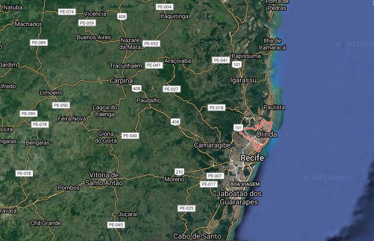

Olinda não possui aeroporto próprio, o mais próximo é aquele localizado em Recife. Ele fica distante pouco menos de 20 quilômetros da cidade. Então, já anota nossa primeira dica: a melhor opção para chegar em Olinda é através de Recife.
Aproveite para passar uns dias na capital de Pernambuco, e para isso, vale a pena conferir nossas dicas sobre o destino nos posts sobre melhores passeios em Recife e nossas sugestões de roteiros em Recife, com opções para 3, 5 ou 7 dias de viagem.
Após chegar na capital, saiba que você facilmente poderá transitar de uma cidade a outra de táxi ou Uber. Ou seja, você pode até escolher uma hospedagem em Recife e fazer apenas um bate e volta em Olinda.
Assim, você escolhe o ponto de partida de seu roteiro em Olinda, pede para ser deixado lá e vai fazendo o resto do passeio a pé. Para a volta, é só chamar outro carro pelo aplicativo.

Todo o trajeto que vamos sugerir por Olinda pode ser feito a pé, e essa é justamente a graça de um passeio pela cidade. Portanto, não planeje apenas uma visita aos pontos indicados, mas aproveite o caminho para reparar nas casinhas, se perder pelas íngremes ladeiras, tirar várias fotos e ainda ver Recife por um outro ângulo.
Aliás, Olinda é justamente famosa por suas ladeiras. Portanto, se você ou alguém com quem você estiver viajando tiver dificuldade de locomoção ou algum problema para caminhar por ruas irregulares e com várias subidas talvez fazer o trajeto a pé não seja o mais indicado.
Ao planejar sua viagem, avalie qual é a melhor opção para você e sua família, afinal essa decisão também pode influenciar como vocês pretendem explorar a cidade.
Dica: para explorar Recife, Olinda e arredores pode ser interessante alugar um carro para ter mais liberdade para fazer seus passeios. Nossa sugestão é que você confira o site da Localiza para reservar seu carro de forma prática e rápida. A gente sempre usa e recomenda!
Ônibus entre Recife e Olinda: R$ 4,70.
Uber/99 entre Recife e Olinda: média de R$ 25.
Passeio bate-volta com tour guiado: média de R$ 70.